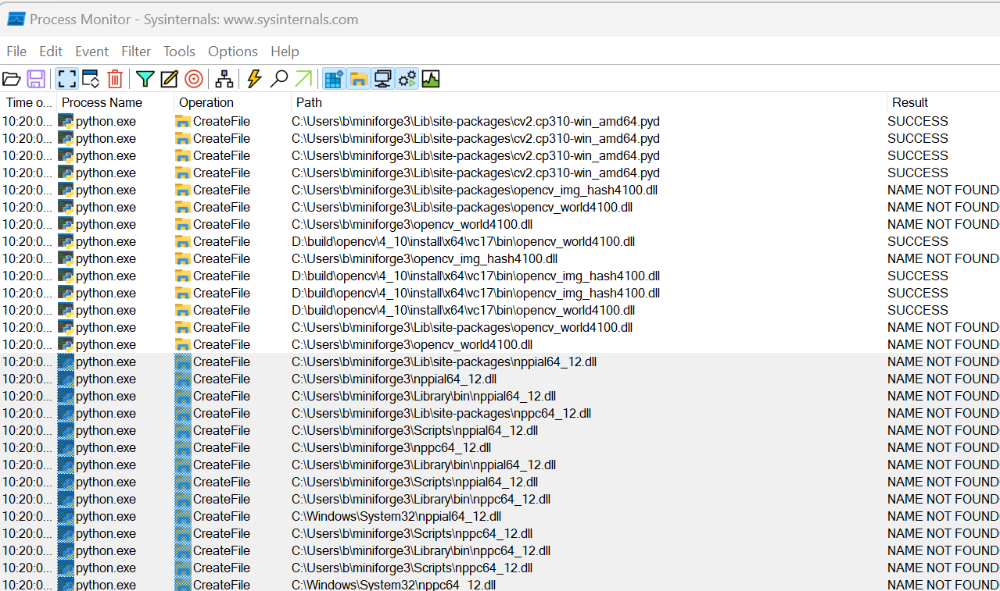

import cv2ImportError: DLL load failed while importing cv2: The specified module could not be found.If your on Windows using python >= 3.8 having built OpenCV >= 4.6 from source and your seeing the above error when calling import cv2, this short guide should help solve your problem.
The guide assumes that you have either installed the python bindings during the build process (not recommended) or manually copied cv2.cpxx-win_amd64.pyd to your distributions site-packages directory (e.g. C:\Users\<USER>\mambaforge\Lib\site-packages).
So what’s the issue? Although the message is quite explicit regarding the cause, it doesn’t really help with finding a solution. In a nutshell python has found cv2.cpxx-win_amd64.pyd, tried and then failed to load it because a it can’t find a dependant shared library. Now the advice I have seen online regarding this is to dig out trusty dependancy walker, load the cv2.cpxx-win_amd64.pyd and see which dependencies the system can’t find.
Now this is solid advice if we had a C++ application and/or we were using python < 3.8 (which uses the system/user path for dll resolution), however we are not, so even if dependency walker can’t detect any problems we may still be facing the above error.
The good news is there is an easy fix if you know where the missing DLL’s are and only slightly more involved if you don’t as long as you have access to the missing DLL’s on your system.
To demonstrate the fix, I have built the OpenCV shared library and corresponding python bindings and manually copied them to the site-packages directory inside my python distribution (C:\Users\b\mambaforge\Lib\site-packages).
As I have built a shared library the python bindings are dependant on opencv_world470.dll and I haven’t told python where they are I get the error shown below whenn trying to import them.
import cv2ImportError: DLL load failed while importing cv2: The specified module could not be found.Given that I know the path to OpenCV’s shared libraries is required and I haven’t told python about it, the first thing to try is to add it to pythons DLL search path and see if that solves the problem.
import os
os.add_dll_directory("D:\\build\\opencv\\4_7_0\\cuda_12_D\\bin")
import cv2ImportError: DLL load failed while importing cv2: The specified module could not be found.Ahh the same error, what’s going on.
In this case I also built OpenCV against the CUDA SDK so there is a good chance its missing DLL’s from there as well. I can try to fix the issue by simply adding the location of the CUDA SDK binaries to the python DLL search path as shown below.
os.add_dll_directory("C:\\Program Files\\NVIDIA GPU Computing Toolkit\\CUDA\\v12.0\\bin")
import cv2 as cvThis appears to have solved the issue, but its a good idea to examine the build information by calling print(cv2.getBuildInformation()) just to double check I have loaded the right version of OpenCV.
print(cv2.getBuildInformation())print(cv2.getBuildInformation())
General configuration for OpenCV 4.7.0-dev =====================================
Version control: 4.7.0-291-g47ae518c87
Extra modules:
Location (extra): D:/repos/opencv/contrib/modules
Version control (extra): 4.7.0-42-ga42b8bef
Platform:
Timestamp: 2023-03-21T15:46:23Z
Host: Windows 10.0.22621 AMD64
CMake: 3.25.1
CMake generator: Ninja
CMake build tool: D:/bin/ninja/ninja.exe
MSVC: 1934
Configuration: Release
CPU/HW features:
Baseline: SSE SSE2 SSE3
requested: SSE3
Dispatched code generation: SSE4_1 SSE4_2 FP16 AVX AVX2 AVX512_SKX
requested: SSE4_1 SSE4_2 AVX FP16 AVX2 AVX512_SKX
SSE4_1 (18 files): + SSSE3 SSE4_1
SSE4_2 (2 files): + SSSE3 SSE4_1 POPCNT SSE4_2
FP16 (1 files): + SSSE3 SSE4_1 POPCNT SSE4_2 FP16 AVX
AVX (8 files): + SSSE3 SSE4_1 POPCNT SSE4_2 AVX
AVX2 (36 files): + SSSE3 SSE4_1 POPCNT SSE4_2 FP16 FMA3 AVX AVX2
AVX512_SKX (8 files): + SSSE3 SSE4_1 POPCNT SSE4_2 FP16 FMA3 AVX AVX2 AVX_512F AVX512_COMMON AVX512_SKX
C/C++:
Built as dynamic libs?: YES
C++ standard: 11
C++ Compiler: C:/Program Files/Microsoft Visual Studio/2022/Community/VC/Tools/MSVC/14.34.31933/bin/Hostx64/x64/cl.exe (ver 19.34.31937.0)
C++ flags (Release): /DWIN32 /D_WINDOWS /W4 /GR /D _CRT_SECURE_NO_DEPRECATE /D _CRT_NONSTDC_NO_DEPRECATE /D _SCL_SECURE_NO_WARNINGS /Gy /bigobj /Oi /fp:precise /FS /EHa /wd4127 /wd4251 /wd4324 /wd4275 /wd4512 /wd4589 /wd4819 /MD /O2 /Ob2 /DNDEBUG /Zi
C++ flags (Debug): /DWIN32 /D_WINDOWS /W4 /GR /D _CRT_SECURE_NO_DEPRECATE /D _CRT_NONSTDC_NO_DEPRECATE /D _SCL_SECURE_NO_WARNINGS /Gy /bigobj /Oi /fp:precise /FS /EHa /wd4127 /wd4251 /wd4324 /wd4275 /wd4512 /wd4589 /wd4819 /MDd /Zi /Ob0 /Od /RTC1
C Compiler: C:/Program Files/Microsoft Visual Studio/2022/Community/VC/Tools/MSVC/14.34.31933/bin/Hostx64/x64/cl.exe
C flags (Release): /DWIN32 /D_WINDOWS /W3 /D _CRT_SECURE_NO_DEPRECATE /D _CRT_NONSTDC_NO_DEPRECATE /D _SCL_SECURE_NO_WARNINGS /Gy /bigobj /Oi /fp:precise /FS /MD /O2 /Ob2 /DNDEBUG /Zi
C flags (Debug): /DWIN32 /D_WINDOWS /W3 /D _CRT_SECURE_NO_DEPRECATE /D _CRT_NONSTDC_NO_DEPRECATE /D _SCL_SECURE_NO_WARNINGS /Gy /bigobj /Oi /fp:precise /FS /MDd /Zi /Ob0 /Od /RTC1
Linker flags (Release): /machine:x64 /INCREMENTAL:NO /debug
Linker flags (Debug): /machine:x64 /debug /INCREMENTAL
ccache: NO
Precompiled headers: NO
Extra dependencies: cudart_static.lib nppc.lib nppial.lib nppicc.lib nppidei.lib nppif.lib nppig.lib nppim.lib nppist.lib nppisu.lib nppitc.lib npps.lib cublas.lib cudnn.lib cufft.lib -LIBPATH:"C:/Program Files/NVIDIA GPU Computing Toolkit/CUDA/v12.0/lib/x64"
3rdparty dependencies:
OpenCV modules:
To be built: aruco barcode bgsegm bioinspired calib3d ccalib core cudaarithm cudabgsegm cudacodec cudafeatures2d cudafilters cudaimgproc cudalegacy cudaobjdetect cudaoptflow cudastereo cudawarping cudev datasets dnn dnn_objdetect dnn_superres dpm face features2d flann fuzzy gapi hfs highgui img_hash imgcodecs imgproc intensity_transform line_descriptor mcc ml objdetect optflow phase_unwrapping photo plot python3 quality rapid reg rgbd saliency shape stereo stitching structured_light superres surface_matching text tracking ts video videoio videostab wechat_qrcode xfeatures2d ximgproc xobjdetect xphoto
Disabled: world
Disabled by dependency: -
Unavailable: alphamat cvv freetype hdf java julia matlab ovis python2 sfm viz
Applications: tests perf_tests examples apps
Documentation: doxygen python
Non-free algorithms: YES
Windows RT support: NO
GUI: WIN32UI
Win32 UI: YES
OpenGL support: YES (opengl32 glu32)
VTK support: NO
Media I/O:
ZLib: build (ver 1.2.13)
JPEG: build-libjpeg-turbo (ver 2.1.3-62)
SIMD Support Request: YES
SIMD Support: NO
WEBP: build (ver encoder: 0x020f)
PNG: build (ver 1.6.37)
TIFF: build (ver 42 - 4.2.0)
JPEG 2000: build (ver 2.4.0)
OpenEXR: build (ver 2.3.0)
HDR: YES
SUNRASTER: YES
PXM: YES
PFM: YES
Video I/O:
DC1394: NO
FFMPEG: YES (find_package)
avcodec: YES (59.18.100)
avformat: YES (59.16.100)
avutil: YES (57.17.100)
swscale: YES (6.4.100)
avresample: NO
GStreamer: NO
DirectShow: YES
Media Foundation: YES
DXVA: YES
Parallel framework: Concurrency
Trace: YES (with Intel ITT)
Other third-party libraries:
Intel IPP: 2021.8 [2021.8.0]
at: D:/build/opencv/4_7_0/cuda_12_D/3rdparty/ippicv/ippicv_win/icv
Intel IPP IW: sources (2021.8.0)
at: D:/build/opencv/4_7_0/cuda_12_D/3rdparty/ippicv/ippicv_win/iw
Lapack: NO
Eigen: NO
Custom HAL: NO
Protobuf: build (3.19.1)
Flatbuffers: builtin/3rdparty (23.5.9)
NVIDIA CUDA: YES (ver 12.0, CUFFT CUBLAS NVCUVID NVCUVENC)
NVIDIA GPU arch: 61 86
NVIDIA PTX archs: 86
cuDNN: YES (ver 8.8.1)
OpenCL: YES (NVD3D11)
Include path: D:/repos/opencv/opencv/3rdparty/include/opencl/1.2
Link libraries: Dynamic load
Python 3:
Interpreter: C:/Users/b/mambaforge//python.exe (ver 3.9.16)
Libraries: C:/Users/b/mambaforge//libs/python39.lib (ver 3.9.16)
numpy: C:/Users/b/mambaforge//lib/site-packages/numpy/core/include (ver 1.23.5)
install path: C:/Users/b/mambaforge//Lib/site-packages//cv2/python-3.9
Python (for build): C:/Users/b/mambaforge//python.exe
Java:
ant: NO
JNI: NO
Java wrappers: NO
Java tests: NO
Install to: D:/build/opencv/4_7_0/cuda_12_D/install
-----------------------------------------------------------------That was easy but what can I do if I’m not as good at guessing what’s missing. Next I will use the same example again to demonstrate how to find out which DLL’s python is searching for.
To find which DLL’s are missing we can use process monitor which will enable us to see the names of the DLL’s which python is trying to load.
Process monitor by default has produces a significant amount of output so it is a good idea to filter out as much of this noise as you can. To do this you can either load this filter (as suggested by LaurentBerger) with “File->Import Configuration”, or manually add the filter entries on the “Process Monitor Filter” window, which is opened by default every time you launch the application, details below.
Since we only want to view shared libaries which are accessed by the python.exe process, we can add the following filters to make our lives easier:
Your filter should now resemble the below.

Before continuing it is advisable to close any other python proceses as the output from these will pollute the main window.
Now start python and before typing import cv2, press the clear button (red trash can) in process monitor to clear any output generated during python’s initialization.
import cv2ImportError: DLL load failed while importing cv2: The specified module could not be found.
Because I have reset the python DLL search path on running import cv2 I get the above output in process monitor which shows that we successfully found cv2.cp39-win_amd64.pyd (otherwise we would see the “ModuleNotFoundError: No module named ‘cv2’” error) however it also shows several attempts have been made to locate opencv_img_hash_470.dll and opencv_world470.dll without success.
As before we add the directory containing these to the python DLL search path.
import os
os.add_dll_directory("D:\\build\\opencv\\4_7_0\\cuda_12_D\\bin")
import cv2ImportError: DLL load failed while importing cv2: The specified module could not be found.
Now process monitor shows that opencv_img_hash_470.dll and opencv_world470.dll were located successfully after a few attempts however we are missing nppc64_12.dll which is part of the CUDA SDK. As before if we add the CUDA SDK binary directory to the python DLL search path the call to import cv2 will be successful. If however we were still seeing the same error we could simply repeat the process, that is examine the output in process monitor and add the directories containing the missing DLL’s to the python DLL search path.